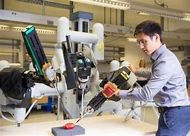

{% extends 'profile.html' %}
{% block dashboard %}
Robotics Engineer Job Description

What is a robotics engineer job?
Robotics engineers are responsible for coming up with blueprints for the robotics or automation systems, building and programming robots or machines, testing them out to make sure they’re functional, and putting their designs into practice in limited spaces while working alongside individuals who specialize in particular areas of the business. A Robotics Engineer job requires the individual to play the role of the designers and developers of automated systems.
They are the ones who help create devices that can act on their own without human intervention to perform complex tasks such as flying an airplane, or navigating a robot through rough terrain. Robotics engineer skills are often demanded in factories where industrial robots use specialized software tools to help build different parts of finished products like cars or electronic equipment.
What does a robotics engineer do?
What does a robotics engineer do?
Just to give you an idea, robotics engineer’s responsibilities spend over half of their time building the machines that robots end up working on. They create the plans that are used to get operational and make sure everything works together in just the right way. They also make sure robots work effectively by designing the mechanics of machines that have been made for building other robots. Before any machine is used to build a robot, engineers decide what purpose it will serve in highlighting what its intended focus is going to be. Although robots are used mainly for task automation, the person designing the robot and has the robotics engineer job has to take into consideration that its intended purpose be well defined.
Robotics engineer Job Duties Include:
Robotics Engineer Job includes Building, configuring, and testing robots.
They have to design software systems
As a robotics engineer, you make sure that your devices represent the optimal fusion of form and functionality. One of your main responsibilities as a robotics engineer is closely analyzing each of your units to be sure they are stable and effective in all conditions. Other big parts of this job include repairing and reprogramming existing machines where necessary.
Reviewing, approving and ensuring that construction of the product is cost effective, meets budget and the project may be implemented as designed.
{% endblock %}